台湾珍寺の旅、お次に向かったのは
無極慈玄聖天宮という道教寺院。
御覧の通り、有無を言わさぬ迫力。そして特異な建物。石頭廟と呼ばれている。
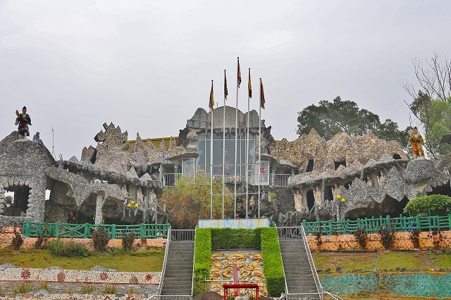
道教寺院というよりは
ＳＦ映画に出てくる宇宙人の秘密基地みたいだ。
ぬらりぬらりとしたフォルムだが一応中央部分とそれに付随する左右のウイングによって構成されている。
いうなれば平等院鳳凰堂みたいなものだが、趣が全く違いますね。
そしてこの建物の表面には
びっしりサンゴや石が張り付けられているのだ。
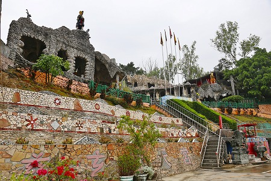
こりゃあ凄い！
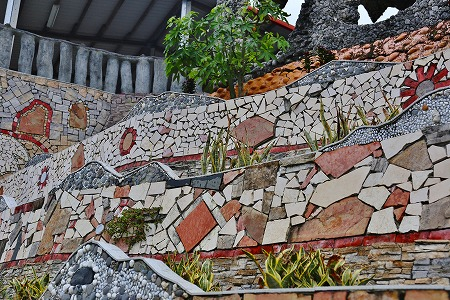
基壇部は製材された石材を乱張りで張り合わせてある。
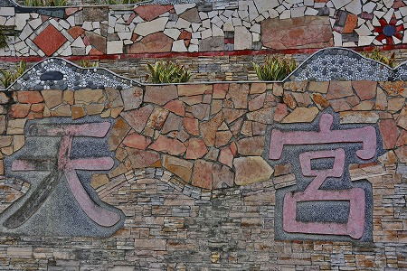
「慈玄聖天宮」と象られた張り石。
左右のウイングの上には
済公活仏のお姿が。
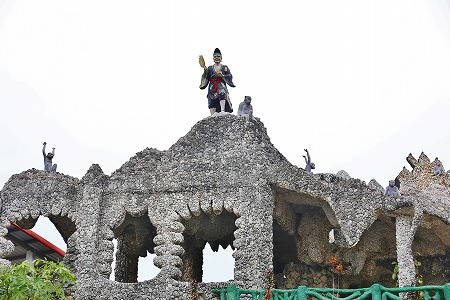
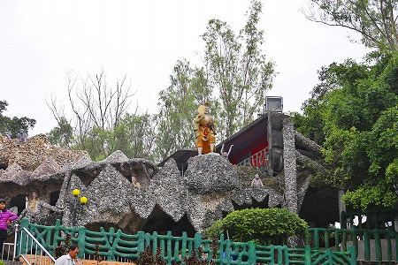
この済公という人物は実在した人で、僧侶ながらお肉大好き、お酒大好き、博打大好き、女大好き、の破戒坊主だったが、何故か人気が高く、台湾の寺廟にいくとよく見かける。
特に同じ高雄市の旗山には
済公活仏の巨像もあり、その人気のほどが伺える。
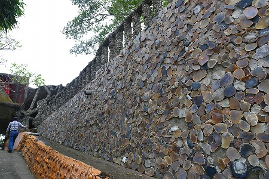
中には石を薄くカッティングしたものを張り付けてある部分もある。
磨いて光っているのでまるで濡れた鱗みたいだ。
外から見ただけでウズウズドキドキワクワクするじゃないのー！
辛抱たまらん！中に入るよ！
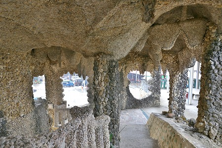
建物の中にはびっしりと珊瑚が張り付けられている。
いわゆる中華版グロッタだ。
グロッタとはそもそもルネッサンス期のイタリアで流行した人工洞窟のことで、当サイトでは
イゾラベッラなどを紹介したが、この世とあの世の境界線を現世に出現させようとする試みだった。
ここ無極慈玄聖天宮の石頭廟もこの世とあの世の境界線を強く感じさせつつ、この世にはありえないパラダイス感を存分に表現している。
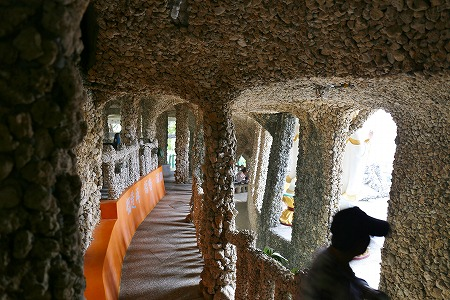
以前訪れた
三芝貝殻廟や
鹿港の貝殻廟と違って貝を使っていないので色味には欠けるがそれでも充分「普通じゃない感」にあふれている。
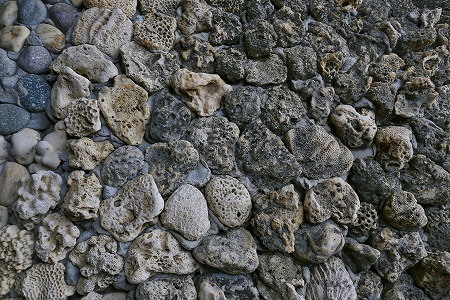
こんな感じで壁や天井は隙間なく珊瑚に覆われている。
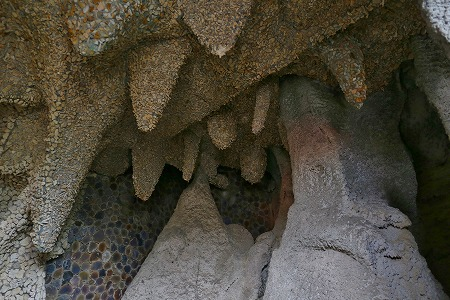
ぐにゃりとした空間が延々と続く。
まるで内臓の中を歩いているような気分になるぞ。
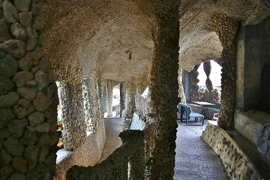
床以外の天井、柱、壁が微妙に歪んでいて平衡感覚がおかしくなってきた…。
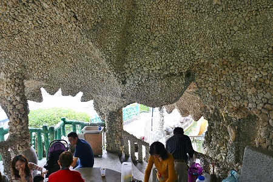
特に天井は大きく波打っており、鍾乳洞を連想させる。
ただし、思いの外開放的な空間なので、洞窟独自の陰にこもった雰囲気はない。
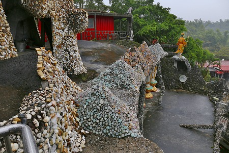
テラスに出る。
この辺りは丸石やスライスした石で覆われている。
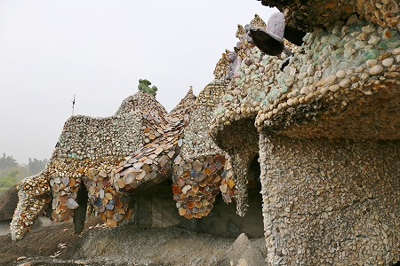
写真では判りにくいが、材質が違うと全体のイメージもグッと変わって来るものだ。
石の方が色が多いのでカラフル、というか結構ガチャガチャしてる。
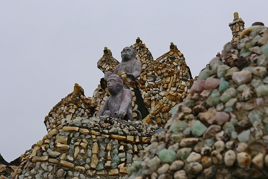
そしてなぜか猿。
孫悟空の生まれた花果山とかイメージしているのだろうか？石の山だけに。
この廟の屋根のあちこちに猿がいた。
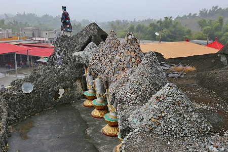
とがった屋根が連続する光景は南イタリアのアルベロベッロを彷彿とさせる。
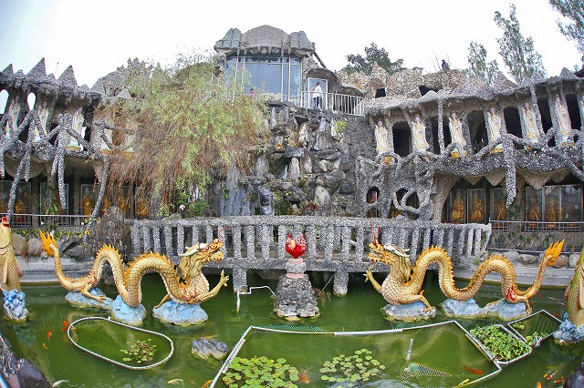
廟の中心には池があった。
池を囲むように十八羅漢像と観音像がずらりと並んでいる。
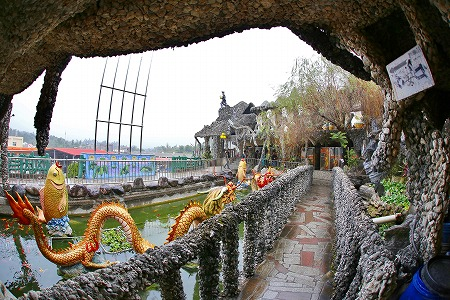
石の橋が左右のウイング部分をつないでいる。
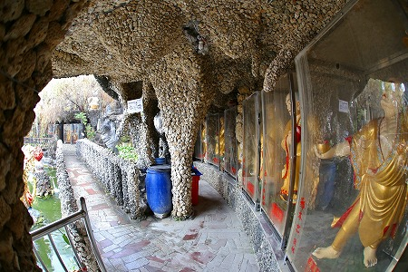
橋の裏側には十八羅漢。
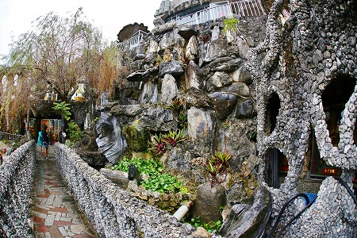
中央だけは大きな自然石が組まれて立体枯山水状態。
もう一つ上のフロアに移動。
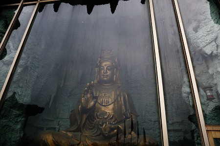
ガラスケースの中には観音サマが鎮座している。
ご本尊、ということになるのだろうか。
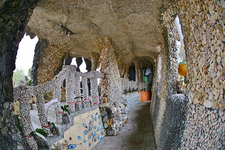
中の通路も行きと帰りの経路が判れており、案外複雑な構造になっていた。
あまりの面白さに何度も行ったり来たりしてしまったよ。
これだけの規模で石や珊瑚を張り付けるのは容易ではなかっただろう。
物凄い労力の賜物だとおもう。
それもまた信仰心の表れなのだろう。信仰心凄いぜ！
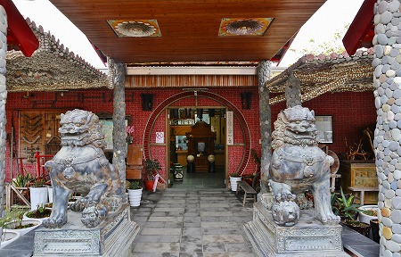
石頭廟の敷地内には記念館のようなものがあった。
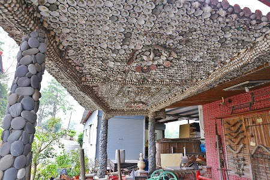
案の定、ここも石や貝で覆われてました…
次へGOGOGO！